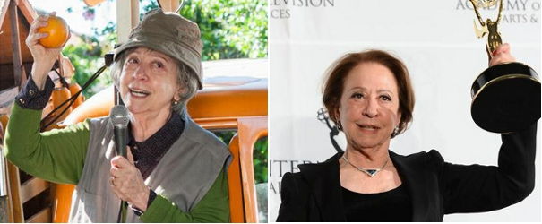

Série DOCE DE MÃE e Fernanda Montenegro finalistas do Emmy
A série DOCE DE MÃE, que a Casa de Cinema de Porto Alegre produziu para a TV Globo, com direção de Jorge Furtado e Ana Luiza Azevedo, é finalista ao Prêmio Emmy Internacional, em duas categorias: Melhor Série de Comédia e Melhor Atriz, para Fernanda Montengro. Fernanda concorre ao bicampeonato, já que foi a grande vencedora em 2013, pelo mesmo papel de Dona Picucha, no telefilme piloto da série, que foi ao ar em dezembro de 2012.
Nos últimos quatro anos, é a terceira vez que produções da Casa de Cinema para a Globo integram a lista final de concorrentes ao Emmy Internacional, já que o especial HOMENS DE BEM foi finalista em 2012 como Melhor Telefilme.
Este ano, a televisão brasileira teve um total de 5 indicações ao Emmy Internacional: além de DOCE DE MÃE e Fernanda Montenegro, também concorrem a telenovela "Império" (também da Globo), a série dramática "Psi" (HBO América Latina) e Emílio de Mello, como Melhor Ator Dramático, pela mesma série.
A cerimônia de entrega do prêmio será no dia 23 de novembro, em Nova York. Nas dez categorias em disputa, concorrem ao todo 40 indicados, representando 19 países.
Veja, abaixo, todos os indicados do 43º Emmy Internacional:
Melhor programa de arte
- "Buenaventura No Me Dejes Mas" (Colômbia)
Caracol Televisión/Laberinto Cine y Televisión
- "Illustre & Inconnu: Comment Jacques Jaujard a Sauvé le Louvre" (França)
Ladybird Films
- "Messiah at the Foundling Hospital" (Reino Unido)
Reef Television Ltd
- "Trial of Chunhyyang - A girl prosecuted by feudalism" (Coreia do Sul)
KBS
Melhor ator
- Engin Akyurek, por "Kara Para Ask" (Turquia)
Ay Yapim
- Emilio de Mello, por "Psi" (Brasil)
HBO América Latina-Brasil
- Maarten Heijmans, por "Ramses" (Holanda)
De Familie Film & TV
- Rafe Spall, por "Black Mirror White Christmas" (Reino Unido)
House of Tomorrow/Endemol Worldwide Distribution
Melhor atriz
- Anneke von der Lippe, por "Øyevitne" (Noruega)
NRK / SVT / DR / YLE Fem / Nordvision Fund.
- Fernanda Montenegro, por "Doce de mãe" (Brasil)
Casa de Cinema de Porto Alegre / TV Globo
- Sheridan Smith, por "Cilla" (Reino Unido)
ITV Studios/GroupM Entertainment
Melhor Série de Comédia
- "Doce de mãe" (Brasil)
Casa de Cinema de Porto Alegre / TV Globo
- "Fais Pas Ci, Fais Pas Ca" (França)
Elephant Story / France 2 / AB Distribution
- "Familia en Venta" (Colômbia)
Fox International Channels/Fox Telecolombia
- "Puppet Nation ZA" (África do Sul)
Both Worlds
- "Sensitive skin" (Canadá)
Rhombus Media/Baby Cow Productions/Bell Media's The Movie Network/Corus Entertainment's Movie Central/Tricon Films & Television Canada/Media Fund (CMF)/Rogers Cable Network Fund
Melhor Documentário
- "Africa's wild west - Stallions of the Namib desert" (Áustria)
Interspot Film / ORF / ARTE / NDR / ORF-Enterprise
- "Antes de que nos olviden" (México)
HBO América Latina
- "Growing up down's" (Reino Unido)
Maverick Television & Dartmouth
- "Miners shot down" (África do Sul)
Uhuru Productions
Melhor Série de Drama
- "Engrenages" (França)
Son et Lumiere / Canal+ Creation originale
- "MOZU 1ª Temporada - Night cry of the MOZU" (Japão)
TBS Television / WOWOW / ROBOT
- "My mad fat diary" (Reino Unido)
Tiger Aspect Productions/Drama Republic
- "Psi" (Brasil)
HBO América Latina-Brasil
Melhor Programa de horário nobre em língua estrangeira
- "Arrepentidos U.S. - El infierno de Montoya" (Estados Unidos)
National Geographic Channel/Fox Telecolombia
- "El mejor de los peores" (Estados Unidos)
Fox International Channels/Fox Toma 1
- "Narco Tec" (Estados Unidos)
Mazdoc/Zodiak Latino/Univision
- "La voz kids" (Estados Unidos)
Talpa Media USA, Inc., Warner Horizon Television
Melhor Programa sem roteiro pré-definido
- "50 ways to kiill your mammy" (Reino Unido)
Burning Bright Productions/Brown Bread Productions
- "Barones de la cerveza" (Argentina)
National Geographic Channel Latin America/Nippur Media
- "Flying Doctors" (Bélgica)
Geronimo
- "Master Shef África do Sul" (África do Sul)
Quizzical Pictures/Lucky Bean Media
Melhor Telenovela
- "Ciega a citas" (Espanha)
Dori Media International/Rosstoc/Mediaset Espana/Big Bang Media/Cuatro
- "Império" (Brasil)
TV Globo
- "Jikulumessu" (Angola)
Semba Comunicação
- "Mulheres" (Portugal)
Plural Entertainment Portugal
Melhor Filme para TV / Minissérie
- "La celebración" (Argentina)
Underground Producciones Argentina
- "Common" (Reino Unido)
LA Productions
- "Soldat Blanc" (França)
Breakout Films/Canal+ Creation originale
- "Storytelling of Hostages" (Japão)
WOWOW/Twins Japan

Fernanda como Picucha e recebendo o Emmy Internacional de Melhor Atriz